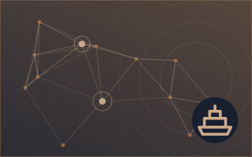
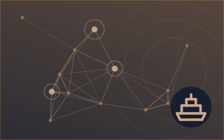
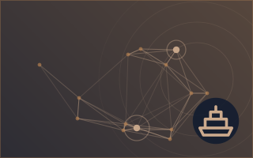

Δασμοί & έλεγχοι εξαγωγών
Οι τίτλοι των ειδήσεων παρουσιάζονται στα αγγλικά, όπως δημοσιεύτηκαν.



New Call of Duty game under fire for using footage of deadly 2022 South Korea crowd crush
The families of people killed in a deadly crowd crush in South Korea are calling on the makers of the latest Call of Duty video game to remove footage it used from the 2022 incident that left 160… από CBC News
5.0Σημασία
5.9Κίνδυνος · αυξημένος
75%Βεβαιότητα
Αλλού στην ενότητα Εμπόριο, Βιομηχανία & Υποδομές
Περισσότερα ›Οι υπόλοιπες υποενότητες της ενότητας Εμπόριο, Βιομηχανία & Υποδομές αυτή τη στιγμή.





